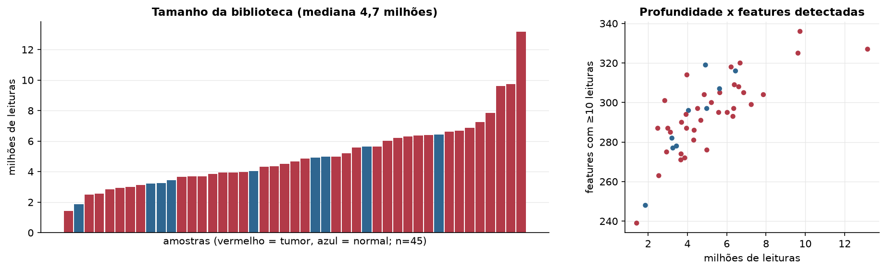
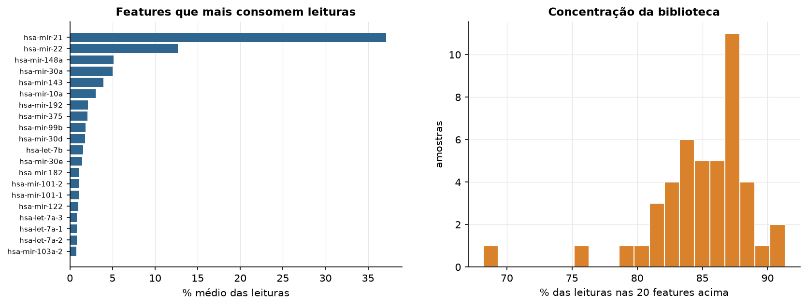
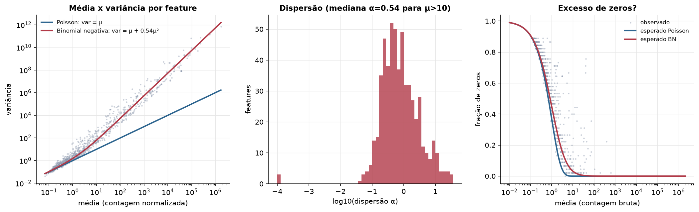
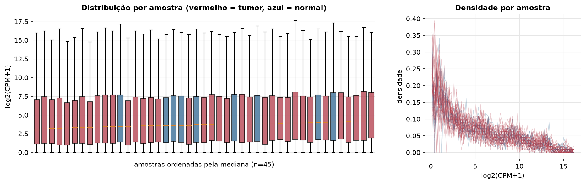
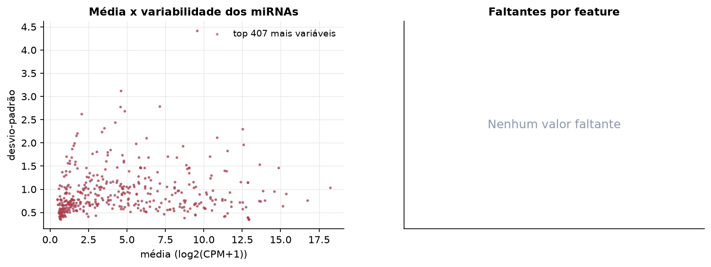
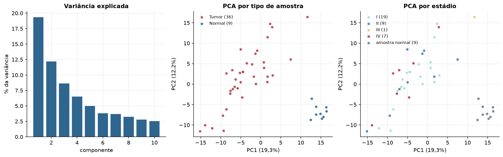
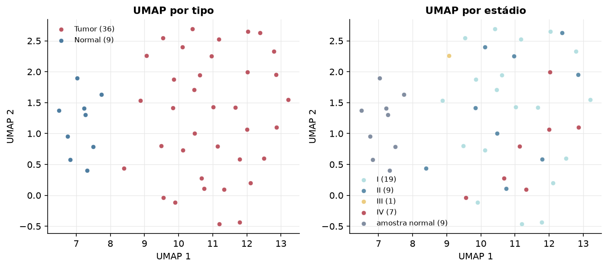
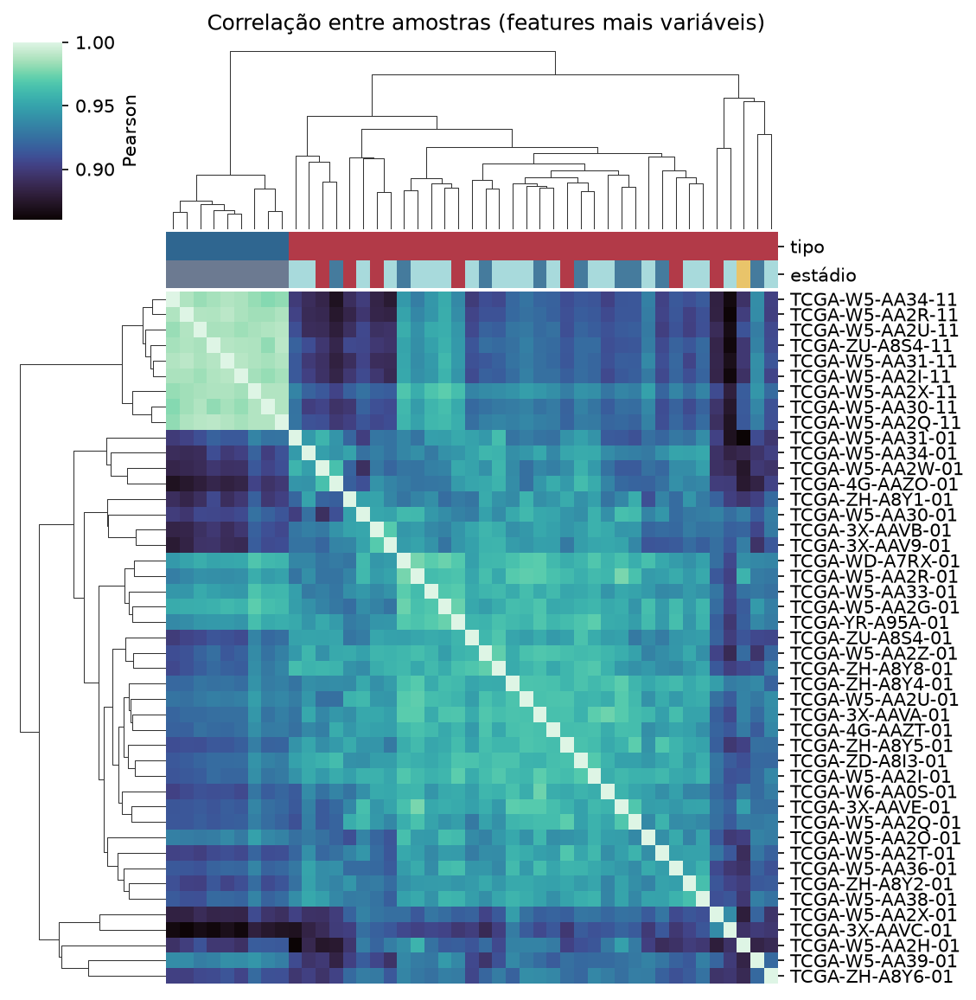
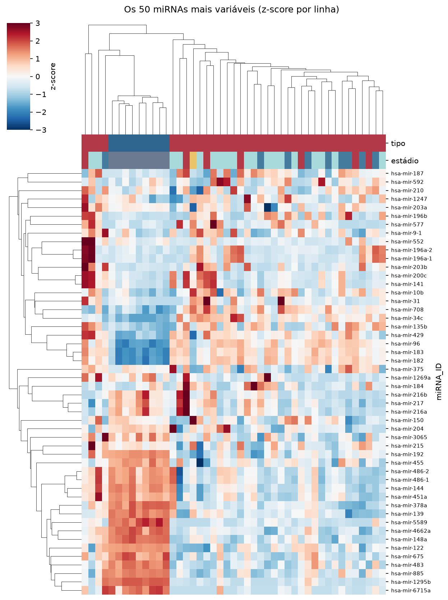
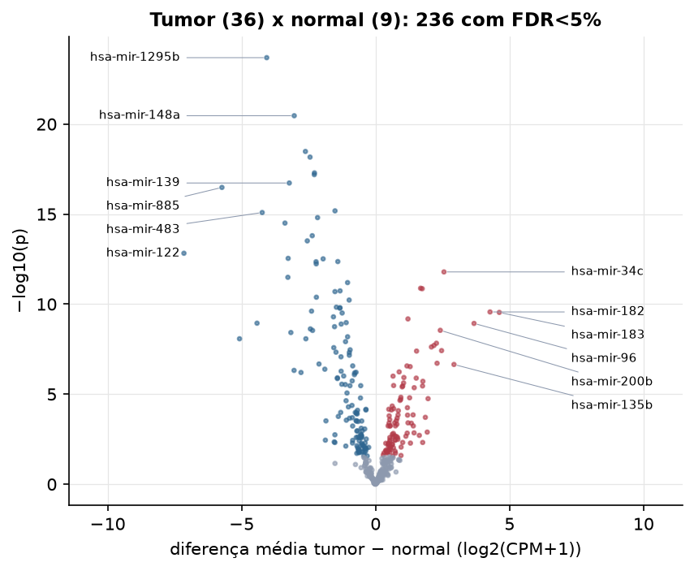

CHOL · miRNA-seq: contagens brutas (GDC)
BCGSC miRNA Profiling (miRBase v21) · gerado em 21/10/2026 16:50
4,7 Mtamanho mediano
0,54dispersão mediana α
407miRNAs
36amostras tumorais
9amostras normais
0,0%valores faltantes
Fonte: API do GDC (BCGSC miRNA Profiling)
Principais resultados
- Bibliotecas de 1,4 a 13,2 milhões de leituras (mediana 4,7). 956 de 1.881 features têm leitura em pelo menos 10% das amostras.
- A variância cresce bem acima da média: a dispersão mediana da binomial negativa é α=0.54 (para features com média > 10). Isso descarta um modelo Poisson e indica binomial negativa (ou Poisson-lognormal) na verossimilhança.
- A fração de zeros é compatível com a binomial negativa (diferença mediana -0,4%); inflação de zeros não parece necessária.
- Em média 85,9% das leituras de cada amostra vão para as 20 features mais abundantes.
- 407 miRNAs medidos em 45 amostras (36 tumorais e 9 normais); 0,0% dos valores estão faltando.
- Os dois primeiros componentes principais explicam 19,3% e 12,2% da variância das features mais variáveis.
- Correlação mediana entre amostras: 0,93.
- Tumor x normal: 236 miRNAs diferentes com FDR < 5% (102 maiores no tumor, 134 maiores no normal; 9 pacientes têm o par tumor-normal).
- Mais aumentados no tumor: hsa-mir-34c, hsa-mir-181b-1, hsa-mir-181b-2, hsa-mir-182, hsa-mir-183, hsa-mir-34b, hsa-mir-96, hsa-mir-200b.
- Mais reduzidos no tumor: hsa-mir-1295b, hsa-mir-148a, hsa-mir-99a, hsa-let-7c, hsa-mir-101-1, hsa-mir-101-2, hsa-mir-139, hsa-mir-885.
- Nenhum dos três primeiros componentes principais se associou a estádio, sexo, idade ou sobrevida com p < 0,05.
Biblioteca


Sobredispersão e zeros

Exploração em log2(CPM+1)
Features com CPM ≥ 1 em pelo menos 20% das amostras (407 features).
Distribuição dos valores


Estrutura das amostras




Tumor x normal

Features mais diferentes entre tumor e normal
| miRNA_ID | diferenca_tumor_menos_normal | t | p | fdr |
|---|---|---|---|---|
| hsa-mir-1295b | -4.063 | -21.583 | 2.05e-24 | 8.36e-22 |
| hsa-mir-148a | -3.037 | -17.786 | 3.44e-21 | 7e-19 |
| hsa-mir-99a | -2.619 | -15.559 | 3.32e-19 | 4.5e-17 |
| hsa-let-7c | -2.446 | -15.343 | 6.84e-19 | 6.96e-17 |
| hsa-mir-101-1 | -2.282 | -15.201 | 5.15e-18 | 4.19e-16 |
| hsa-mir-101-2 | -2.288 | -15.163 | 6.42e-18 | 4.35e-16 |
| hsa-mir-139 | -3.221 | -14.059 | 1.87e-17 | 1.09e-15 |
| hsa-mir-885 | -5.734 | -13.9 | 3.3e-17 | 1.68e-15 |
| hsa-mir-5588 | -1.515 | -20.439 | 6.6e-16 | 2.98e-14 |
| hsa-mir-483 | -4.232 | -13.146 | 8.17e-16 | 3.32e-14 |
| hsa-mir-383 | -2.166 | -13.955 | 1.57e-15 | 5.8e-14 |
| hsa-mir-378a | -3.382 | -14.154 | 3.15e-15 | 1.07e-13 |
| hsa-mir-1468 | -2.365 | -11.909 | 1.58e-14 | 4.96e-13 |
| hsa-mir-192 | -2.549 | -11.395 | 3.07e-14 | 8.92e-13 |
| hsa-mir-122 | -7.152 | -11.36 | 1.49e-13 | 4.06e-12 |
| hsa-mir-4662a | -3.263 | -13.825 | 2.87e-13 | 7.3e-12 |
| hsa-mir-511 | -1.958 | -10.351 | 3.05e-13 | 7.31e-12 |
| hsa-mir-152 | -1.41 | -11.046 | 4.32e-13 | 9.47e-12 |
| hsa-mir-194-2 | -2.221 | -10.232 | 4.42e-13 | 9.47e-12 |
| hsa-mir-194-1 | -2.216 | -10.144 | 5.79e-13 | 1.18e-11 |
| hsa-mir-34c | 2.551 | 10.631 | 1.62e-12 | 3.15e-11 |
| hsa-mir-144 | -3.273 | -9.965 | 3.23e-12 | 5.98e-11 |
| hsa-mir-340 | -1.046 | -9.708 | 6.36e-12 | 1.13e-10 |
| hsa-mir-181b-1 | 1.679 | 9.632 | 1.31e-11 | 2.23e-10 |
| hsa-mir-181b-2 | 1.739 | 9.768 | 1.38e-11 | 2.25e-10 |
| hsa-mir-542 | -1.326 | -9.03 | 1.83e-11 | 2.87e-10 |
| hsa-mir-125b-2 | -1.515 | -9.165 | 2.01e-11 | 3.03e-10 |
| hsa-mir-455 | -2.21 | -8.866 | 4.13e-11 | 6.01e-10 |
| hsa-mir-17 | -0.987 | -8.644 | 5.92e-11 | 8.31e-10 |
| hsa-mir-125b-1 | -1.464 | -8.641 | 1.48e-10 | 2.01e-09 |
Associação com variáveis clínicas
p-valores da associação dos três primeiros componentes principais (só tumores) com estádio (Kruskal-Wallis), sexo (Mann-Whitney), idade (Spearman) e sobrevida global (Cox univariado).
| estádio (Kruskal) | sexo (Mann-Whitney) | idade (Spearman) | sobrevida OS (Cox) | |
|---|---|---|---|---|
| PC1 (17,4%) | 0.662 | 0.644 | 0.414 | 0.773 |
| PC2 (10,5%) | 0.408 | 0.937 | 0.622 | 0.134 |
| PC3 (7,4%) | 0.105 | 0.836 | 0.654 | 0.989 |